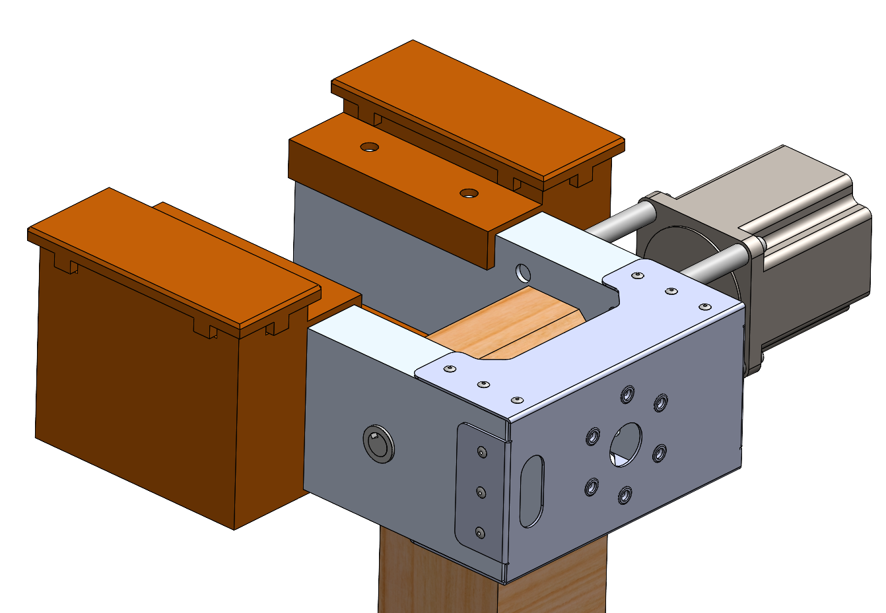
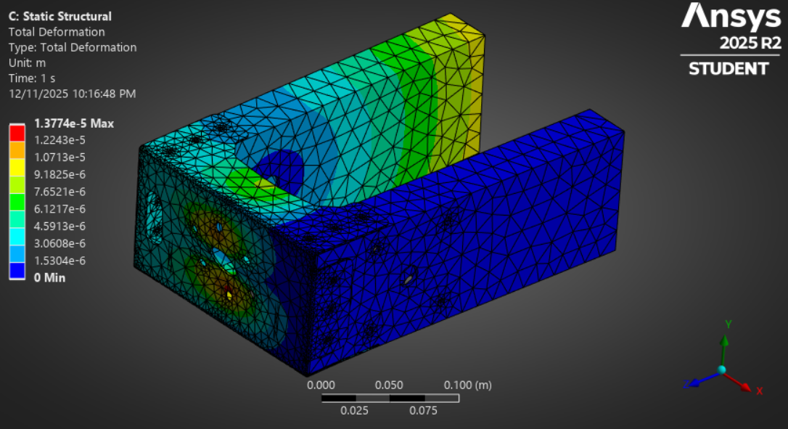
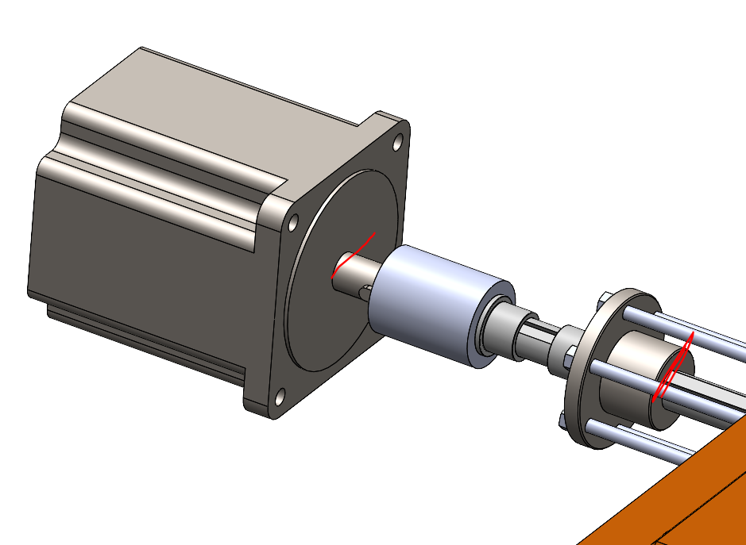
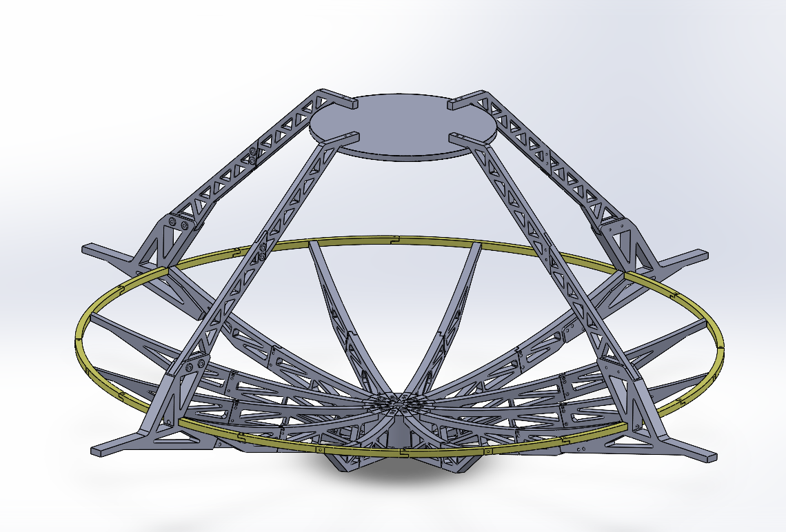

Mechanical design · Tolerance analysis · Manufacturing
2-Axis Ground Station & 5.8 GHz Dish
Primary designer · CU Sounding Rocket Laboratory
I designed the gimbal and integrated dish system, carried the mechanical design through fabrication and assembly, and now direct new members developing harnessing and PCB fixtures for the elevation stage.

Mechanical architecture
The system combines an azimuth turntable with a driven elevation stage, dish attachment structure, and counterweights. The design review specifies 180° elevation travel and a maximum 10 lb antenna load. My design work includes the drivetrain, structural hardware, dish structure, and antenna fixture.

Sizing and structural checks
The design review includes hand calculations for shaft torsion and motor-standoff bending, alongside ANSYS static structural analysis of an acceleration load case. The ANSYS deformation plot reports a maximum of 1.3774 × 10⁻⁵ m, approximately 0.014 mm. The review reports 9.687 MPa maximum stress for that case. These are model predictions under the review assumptions; the review identifies non-constant acceleration effects as further work.

Drivetrain and fabrication
The motor, coupler, shaft, and supporting components form the elevation drivetrain. The parts list combines machined parts, waterjet-cut and bent sheet metal, printed counterweight housings, and purchased bearings and fasteners. Tolerance analysis and assembly were part of my design work.

Assembly and integration
I worked with the SRL team to manufacture and assemble the system. Current integration work includes directing members on harness routing and PCB fixtures for the elevation section. I also teach newer members CAD modeling and mechanical design techniques.

Measured positioning performance
We compared commanded angles with physically measured angles over a small set of tests and obtained approximately 0.2° average error. This is an average positioning result, not a maximum-error bound or a dynamic tracking result. The review’s 0.009° microstep increment describes command resolution and is a different quantity from measured error.
Integrated dish
I was the primary designer of the integrated 5.8 GHz dish structure and antenna fixture. The dish belongs to the same ground-station project, alongside the gimbal and its mechanical interfaces.
Dish structural CAD
